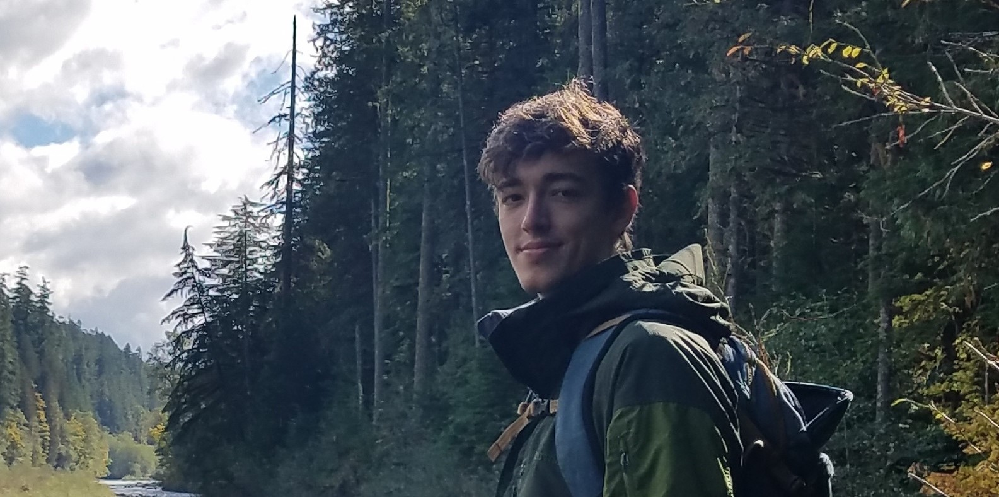

 I'm a budding software developer currently residing in Seattle, WA. I'm passionate about tech and hungry to code! I think what folks are starting to do with drones and geospatial mapping is pretty sweet. My background is in political science and foreign policy, and while it's a big shift for me to go towards tech, I want to be a part of developing technology myself or translate technical skills into actionable knowledge for policy makers.
Education
- University of Washington - Bachelor's of Arts in Political Science - 2016
- CodeFellows - TWO WHOLE DAYS OF INSTRUCTION - 2018
Work Experience
- Administrative Support - Veritox, Inc. and GT Engineering - Mar 2017 - August 2018
- Intern - Municipal League of King County - 2014
- Student Worker - University of Missouri Department of Pathology - 2011
Technical Skills
- Experience with HTML, CSS and Javascript
- Experience maintaining company contact databases
- Experience with Windows and Ubuntu operating systems
Favorite Albums
- Dj Shadow - Endtroducing
- Massive Attack - Mezzanine
- Trifonic - Emergence
- Bonobo - The North Borders
- Emancipator - Safe in the Steep Cliffs
- Shigeto - No Better Time Than Now
- Little People - Mickey Mouse Operation
- Four Tet - Pause
- Blockhead - The Music Scene
- Stephan Bodzin - Powers of Ten